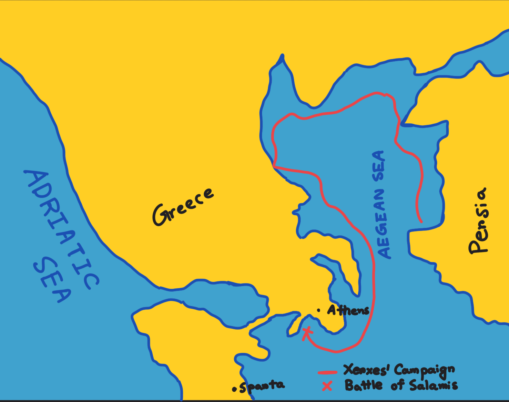
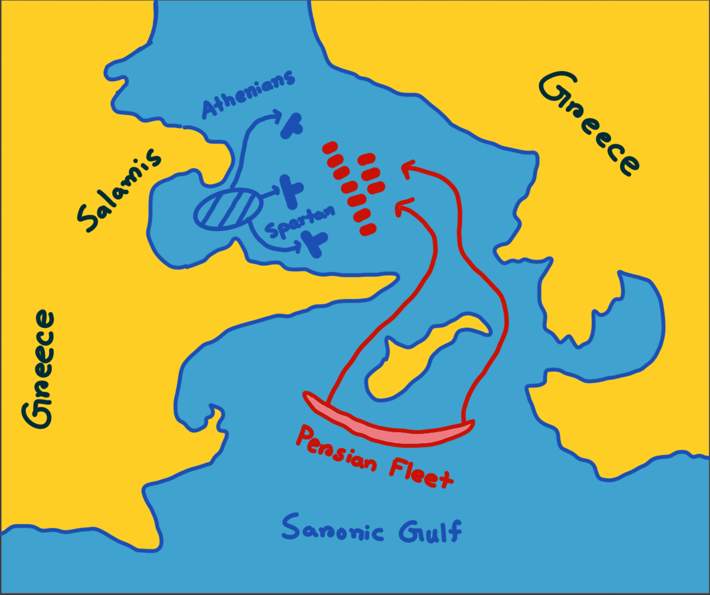
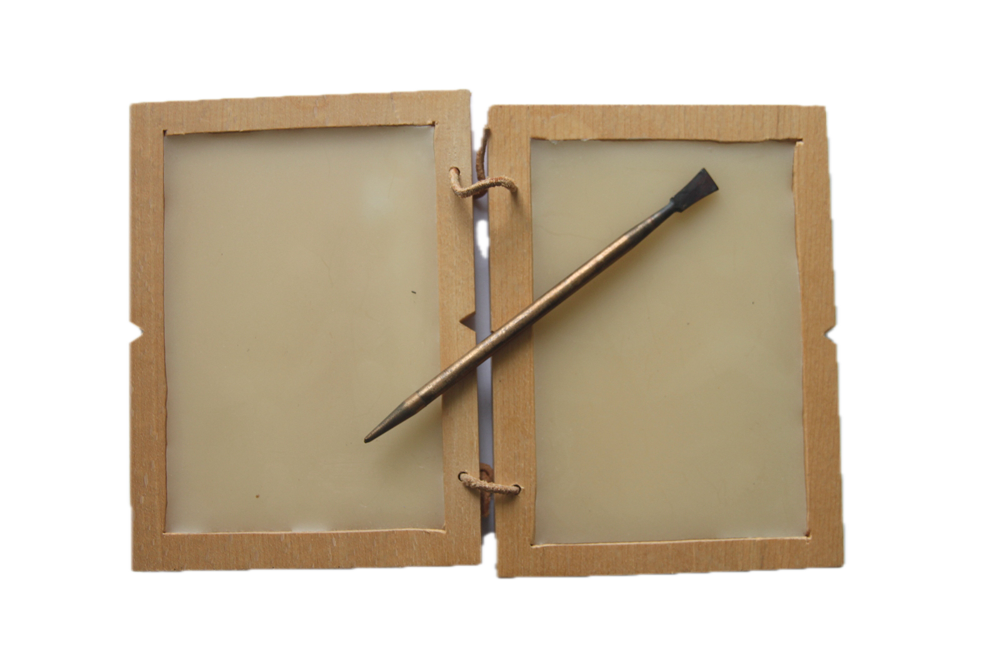

On 23 September 480 B.C., a massive Persian armada was approaching the Bay of Salamis under the command of Xerxes I, the King of Kings, the despotic leader of Persia. Disdain was adamant in his smile, vengeance smoldered in his eyes. He was steadfast in taking revenge upon the Greeks for his father’s disgrace. He was in an exuberant mood, convinced it would be the greatest historical defeat for the Greeks, especially for the Athenians and the Spartans. Even the sea and the wind seemed propitious for him. Victory was inevitable.

1. The Campaign of Xerxes and the Battle of Salamis (Present day location).
It all started 5 years prior to this campaign, when Xerxes decided to build a city in Persepolis, the capital of his kingdom. All of his vassal states and subject nations congratulated him with gifts and 'earth and water', except Athens and Sparta. That day, all the lines of conceit had been crossed by the Greeks. Outraged by the insult, Xerxes pledged to decimate the Greek cities and resolved to chastise this indecent demeanour. For the next five years, he had covertly focused on bolstering his army. By the spring of 480 B.C., he was ready to launch a blitz on the Greeks, aimed to "extend the empire of Persia such that its boundaries will be the God’s own sky…”.
Xerxes and his armada with 100,000 troops stood poised at a precarious watershed moment that would decide the fate of the Persian Empire and its valour. He was confident that Greeks were oblivious of his campaign. So, he ordered his fleet to advance directly into the bay. The colossal Persian ships glided forward into the mist, while Xerxes’ breath grew rapid and heavy in anticipation of the unknown. But out of the blue, a single trireme of the Greek navy cut through the mist, perplexing Xerxes. Then a second trireme appeared from the left, then a third from the center, and within moments a line of Greek warships emerged to confront the Persian armada. Xerxes’ acumen was telling him, the Greek triremes, thousand in numbers, were coming and if his ships continued to glide inside the Bay, they would be easily lured into a deleterious trap. He promptly commanded his fleets to reverse course from the enclosure of the bay. But the sea turned turbulent, and the morning wind began to blow hard toward the shore. The massive Persian vessels, caught in the narrow strait, collided with one another and were pushed directly into the hinge of the Greek fleet. Watching from his throne on the heights above, Xerxes looked on in horror as his dismantled forces were overwhelmed by the brisk, agile Greek triremes. Humiliated and demented, he had no choice but to retreat to Persia. But how had the Greeks uncovered his master plan so easily? Was it the work of spies, or a hidden intrigue against him?

2. The Battle of Salamis.
The Art of Steganography
Herodotus, the Father of History, meticulously chronicled numerous narratives of Greek warfare in his seminal work, ‘Histories’. In his account of the Battle of Salamis, he mentioned a man called Demaratus, who was an ousted spartan king living in Persia. Despite his banishment, he remained loyal and devoted to his homeland. Observing the massive developments at the sea-lines and learning of Xerxes’ campaign against the Greeks, he resolved to find an efficacious way to send word across the Aegean sea. But it was perilous to send a message via spies, evading the Persian guards along the borders. He ingeniously found a clandestine way to do that. He took a wooden wax-tablet, first removed its wax from the both panel, then curved his message directly onto the bare wood and then again waxed over the message. No one inspecting the tablet could know there was a message written underneath the wax; it appeared outright blank.

3. A Wax Tablet and a Roman Stylus (By Peter van der Sluijs - Own work).
Herodotus gave other accounts of covert communications in his book. The Greeks found another way of couriering messages, evading the Persian army.